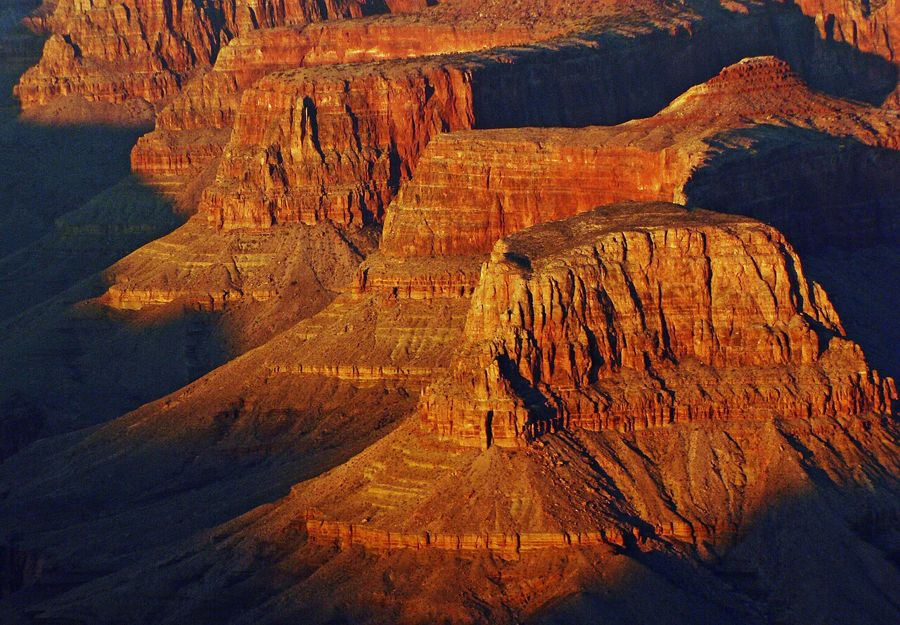
You start on the rim, with the whole canyon below you. The trail drops to the Colorado River, and every step down is a step back up.
Photo: Bernard Spragg. NZ from Christchurch, New Zealand · Public domain · Wikimedia Commons
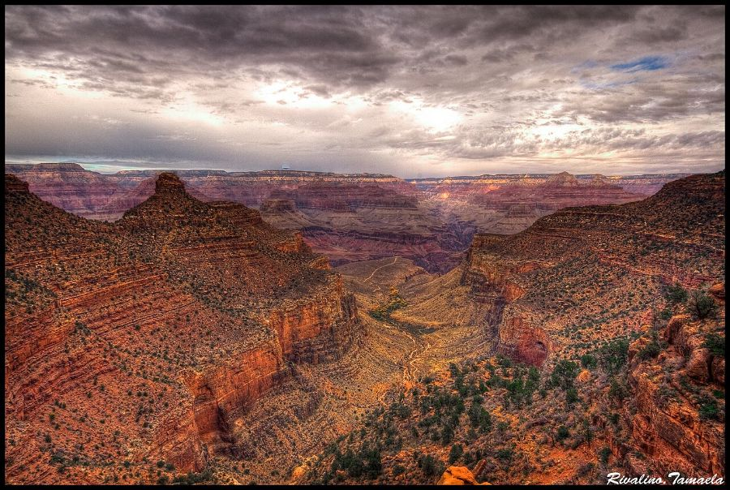
Across the canyon, each butte and ridge glows a different shade of red as the sun drops.
Photo: Rivalino Tamaela from San Jose, US · CC BY 2.0 · Wikimedia Commons
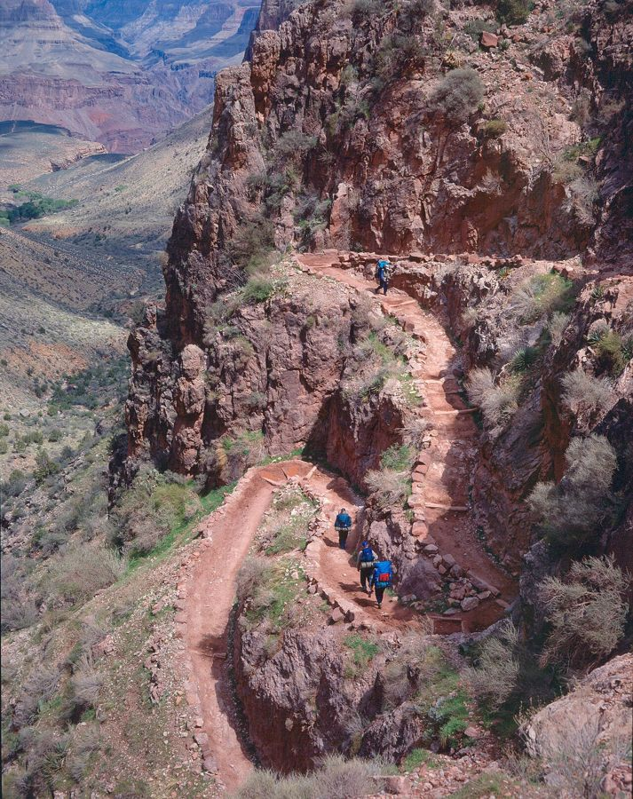
Tight switchbacks cut into the canyon wall, one of the best-known landmarks of the trail.
Photo: Grand Canyon National Park · CC BY 2.0 · Wikimedia Commons
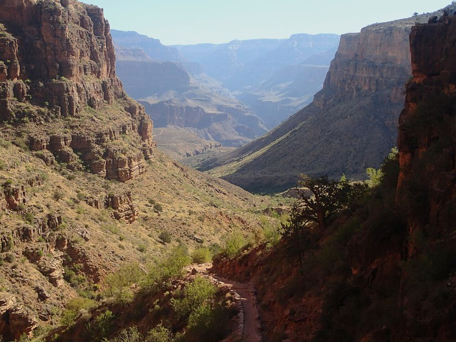
Another stone shelter with seasonal water. Indian Garden is still ahead, and so is the climb back.
Photo: cogdogblog · CC BY 2.0 · Wikimedia Commons
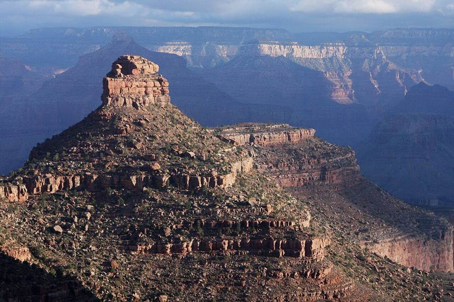
Down here the buttes rise above you, and the rim is far overhead.
Photo: brewbooks from near Seattle, USA · CC BY-SA 2.0 · Wikimedia Commons
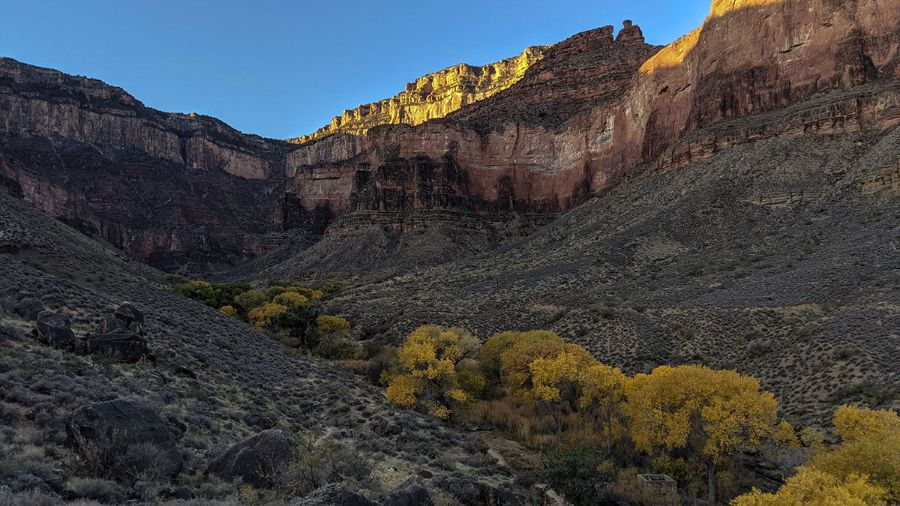
Green cottonwoods in the middle of the desert, in the oasis NPS now calls Havasupai Gardens. The river is still about 3 miles ahead.
Photo: Grand Canyon National Park · CC BY 2.0 · Wikimedia Commons
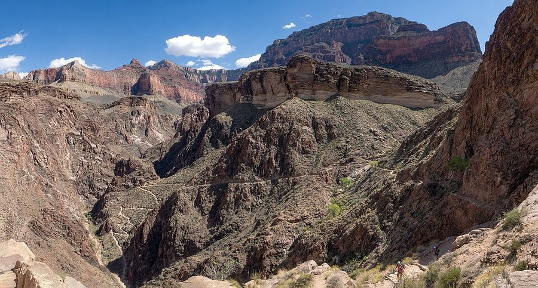
Below Indian Garden the trail zigzags down steep switchbacks into the dark rock of the inner gorge, and the river is almost in reach.
Photo: Grand Canyon NPS · Public domain · Wikimedia Commons
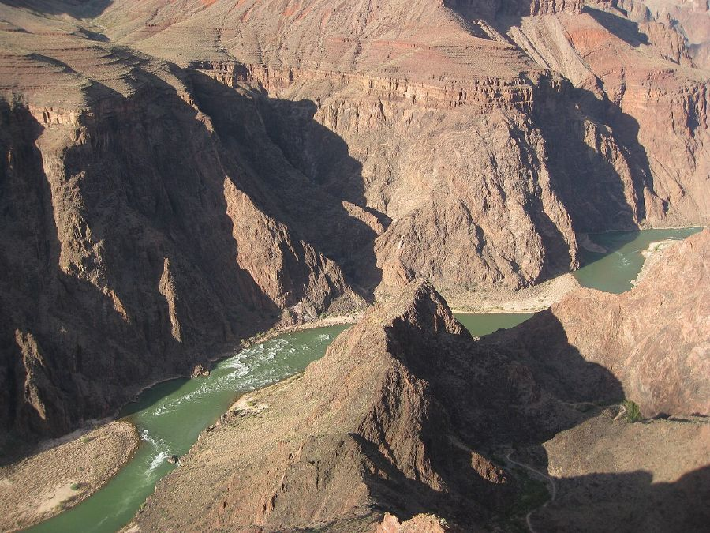
The trail reaches the river at , about below where you started. The Silver Bridge is just ahead.
Photo: brewbooks from near Seattle, USA · CC BY-SA 2.0 · Wikimedia Commons
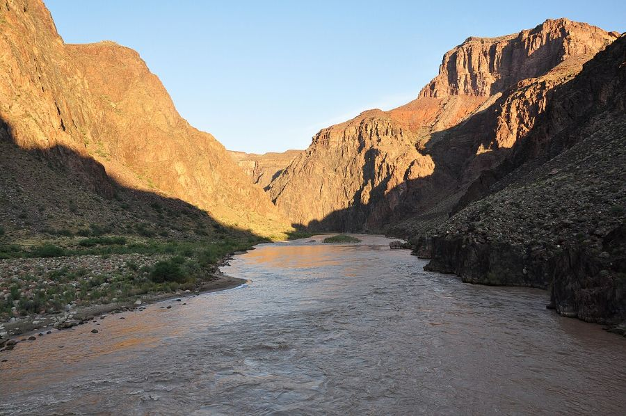
For the next stretch the trail follows the river bank, between the water and the walls of the inner gorge.
Photo: Grand Canyon National Park · CC BY 2.0 · Wikimedia Commons
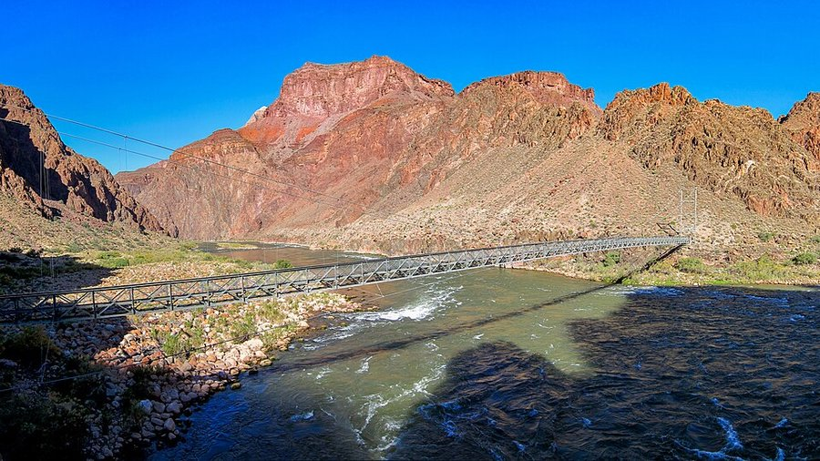
The Silver Bridge, also called the Bright Angel Suspension Bridge, carries you over the Colorado River to the north side.
Photo: Grand Canyon National Park · CC BY 2.0 · Wikimedia Commons
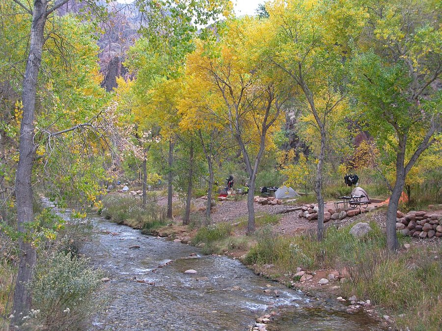
Cottonwoods shade the creek at the campground, a cool, green stop at the bottom of the canyon.
Photo: Grand Canyon National Park · CC BY 2.0 · Wikimedia Commons
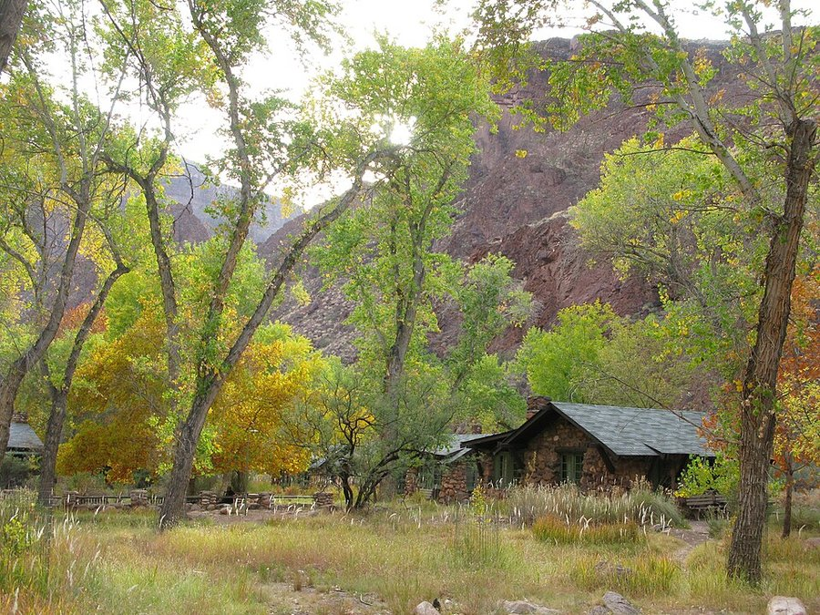
About below the rim, at the stone cabins of Phantom Ranch, the lodge at the bottom of the canyon.
Photo: Grand Canyon National Park · Public domain · Wikimedia Commons